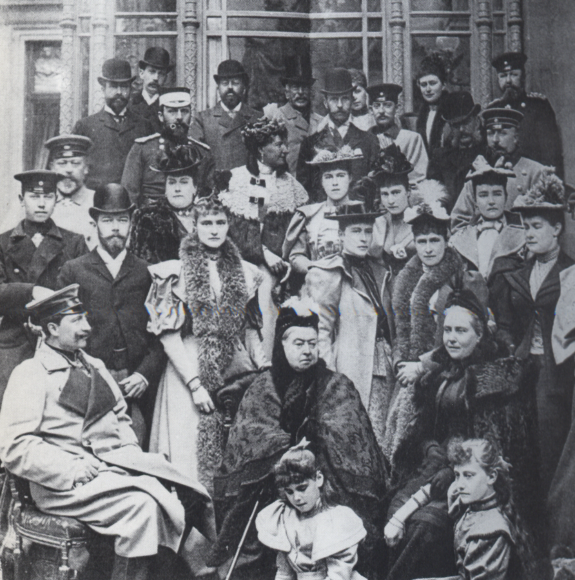
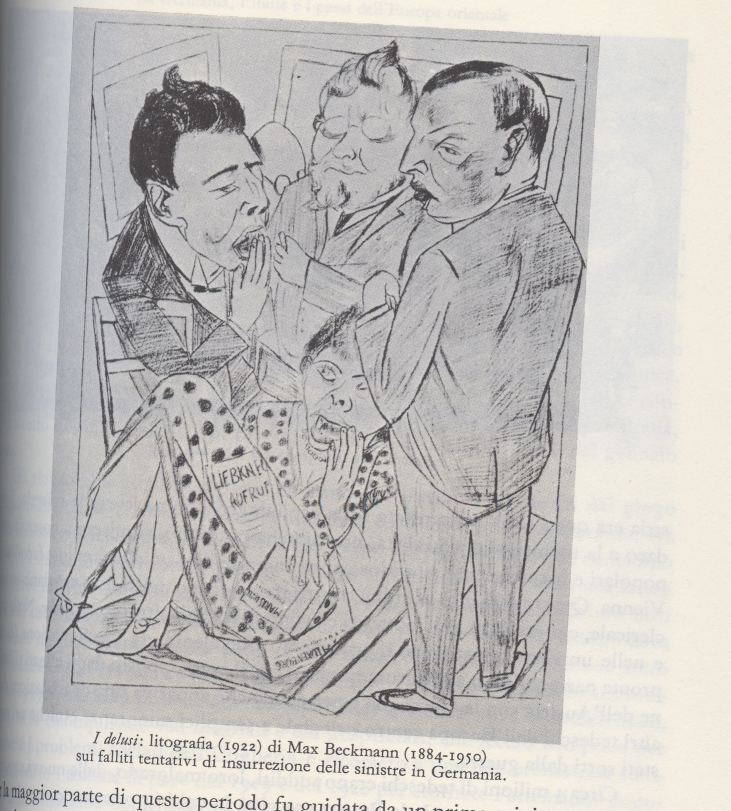
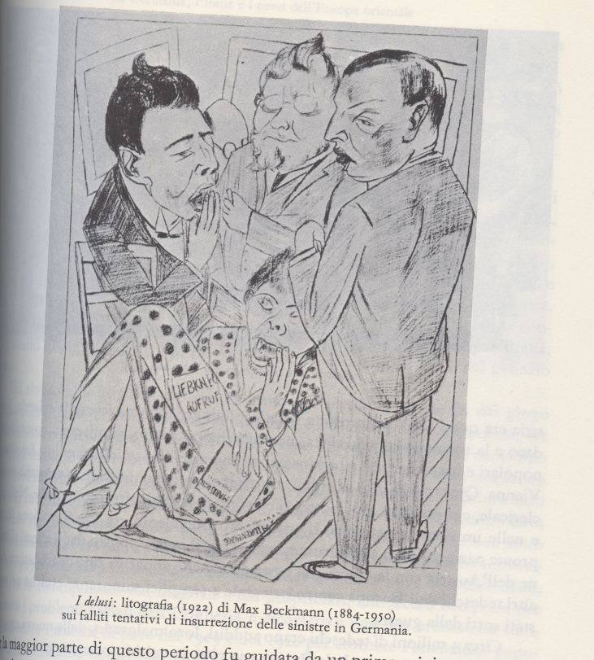

Una nuova Germania

L'arco di tempo che intercorre tra l'inizio secolo e il 1914, in Germania si caratterizza per la stretta associazione tra gli eventi politico-sociali e la parallela trasformazione delle basi economiche e morali della società tedesca; delle idee e dei modi di sentire.
Per comprendere questo periodo storico bisogna rifarsi all'epoca bismarchiana (1862-1890) quando
si formò e si affermo il secondo Reich tedesco, grazie alla politica attuata dal "cancelliere di ferro".
Sconfitta con la guerra austro-prussiana l'egemonia austriaca (1866), la nascente Germania sostituì l'Austria alla guida della Confederazione tedesca del Nord, rafforzandosi con la vittoria nella guerra franco-prussiana del 1870 che le permise d'acquisire l'Alsazia-Lorena e proclamare il re di Prussia, Guglielmo 1°, Kaiser tedesco (Versailles, 1871). Raggiunta con l'impero (Kaiserreich) l'egemonia sull'Europa centrale, Bismarck iniziò una nuova politica estera con la quale riequilibrare gli assetti politici europei e acquisire colonie in Africa.
Il nuovo impero inglobava stati con realtà sociali ed economiche molto differenti, Bismarck cercò un minimo comune denominatore nel modello prussiano, corretto localmente per dare a ciascun stato la propria autonomia. Tuttavia il modello prussiano era caratterizzato da arretratezza culturale, sociale ed economica, dominato com'era dagli interessi dei latifondisti e dei medi proprietari terrieri (Junker). Ne derivarono gravi incongruenze per le aree più evolute del paese, perduranti ostacoli alla modernizzazione dello Stato e della società tedesca, freno al tumultuoso sviluppo economico delle aree occidentali (industria pesante, estrattiva e chimica) e alla crescita culturale e scientifica.
Ciò perché la una classe dirigente imperiale era in prevalenza di estrazione terriera e proveniva dalle arretrate regioni orientali, si mostrava sospettosa verso le nuove idee e manifestava ostilità alla modernizzazione sociale. Eppure il Paese conobbe un buon sviluppo sociale, seppure contrastato e gestito politicamente con evidenti finalità di contrapposizione alla richiesta di nuove libertà sindacali e politiche. Il Reich divenne uno stato militarmente forte e con una buona organizzazione burocratica, ma democraticamente fu debole e in condizione di pericolosa sudditanza verso una classe dirigente conservatrice, il cui nuovo epigono divenne il Kaiser Guglielmo 2°.
Emblematica è una sua frase (1901) pronunciata durante le agitazioni operaie, che egli temeva sfociassero in uno sciopero generale. Disse: "non mi farò trattenere da nulla, neppure dal ministero, il quale andrà semplicemente all'aria se non mi segue". Aggiunse che "la borghesia tedesca fallisce assolutamente!". Egli pretendeva dal governo l'immediata soluzione del conflitto sociale, con ogni mezzo, sostenendo che non vi sarebbe stato miglioramento fin quando i capi socialdemocratici non fossero "tratti fuori dal Reichstag (camera bassa del parlamento) a mano armata e fucilati, mentre ogni socialdemocratico, per legge, doveva essere deportato alle Caroline (atollo disabitato dell'Oceano Pacifico). Il cancelliere di Guglielmo 2°, Bernhard von Bulow, pur brillante e
fantasioso, si rivelò non all'altezza di dare un assetto organico al regime del Reich, in senso costituzionale parlamentare, stabilendo un rapporto positivo tra il governo nazionale e le forze politico-sociali attive nel paese. Chiarisce meglio il concetto pensare che all'epoca, nella maggior parte dei reggimenti prussiani, gli ufficiali erano nominati solo tra la nobiltà, era inoltre tassativamente escluso che potesse esservi un ufficiale israelita. Questo perdurante stato di cose e l'ingombrante personalismo guglielmino cominciarono a fare strepito, accentuando lo scadimento del Kaiser nell'opinione pubblica, anche in quella "ben pensante". Ciò avvenne con più evidenza nella Germania meridionale (Baviera, Wurttemberg) che avevano governi più liberali e dov'era forte il predominio della Chiesa cattolica, sensibile ai fermenti sociali e alle condizioni di vita dei lavoratori. Oggi Bulow appare come un intelligente cortigiano che sapeva cogliere debolezze e inadeguatezze del suo imperial signore, ma che aveva una mediocre stima del popolo tedesco e dei suoi rappresentanti politici. Perciò non pensò seriamente di perfezionare, adeguandola ai tempi, la costituzione del suo regime. L'idea d'una parlamentarizzazione del governo non gli era estranea, ammetteva la collaborazione coi socialdemocratici riformisti, ma gli bastava la contrarietà imperiale per trattenersi dall'agire seriamente in questo senso. Quindi mancò un cancellierato capace di
trasformare lo stato bismarchiano in una moderna democrazia liberale, favorendo l'entrata del
popolo nei quadri dirigenti dello Stato, superando il parlamentarismo imperiale, l'autoritarismo sociale, l'imperialismo militare dominante in politica estera. Per conservare il vecchio status quo si ricorreva a leggi elettorali truffaldine che penalizzavano le aree evolute (città) e quelle ad alta densità operaia favorendo le campagne, in alcuni stati i seggi venivano attribuiti non in base ai voti ricevuti dai partiti ma per blocchi sociali, oppure discriminando gli elettori per reddito percepito.
Eppure la socialdemocrazia tedesca, anche quella intransigente, era intimamente antirivoluzionaria e la sua dialettica interna non le impediva, tutto sommato, di funzionare da opposizione costituzionale. Lo testimoniano i ripetuti contegni non conflittuali dei minatori (Ruhr 1905 e 1908)
e le conclusioni del congresso sindacale tenutosi a Iena (1907), dove prevalsero le tesi moderate di August Bebel su quelle estremistiche di Rosa Luxembourg e Martha Zetkin.
Anche il democratico sud del paese finiva per accettare la predominante mentalità semi feudale dei prussiani, che ostacolava in tutti i modi la collaborazione tra i partiti riformisti borghesi (popolari -centristi - liberali di sinistra) e i socialdemocratici. In conseguenza fu impossibile formare un fronte comune per riformare e omogeneizzare il diritto elettorale tra i vari stati della Confederazione, ciò che accrebbe la disomogeneità tra quanto previsto a livello centrale (Reich) e a livello di singolo stato. La richiesta d'un "suffragio del Reichstag" universale - diretto - segreto veniva portata avanti da ogni partito autonomamente, con risultati nulli. C'erano situazioni assurde; in Sassonia e Prussia
alla Camera dei Deputati  (1907) non risultò eletto neppure un deputato socialdemocratico, mentre in Sassonia i socialisti erano il primo partito e in Prussia il quarto. Intento i famigerati staterelli assolutistici del Mecklenburg seguitavano a vivacchiare nella loro costituzione feudale, respingendo ogni ingerenza del Reichstag in proposito. Le minoranze allogene, su tutte la polacca, subirono politiche decisamente avverse, tendenti alla loro germanizzazione e annientamento. La Dieta prussiana approvò (1902 e 1907) leggi per lo stanziamento di fondi destinati a colonizzare la "Marca orientale". Si trattò di somme ingenti (250 e 70 milioni di marchi) destinate all'acquisto di terra polacca da affidare ai coloni di etnia tedesca. All'iniziativa si opposero soltanto i liberali e i cattolici (i socialdemocratici sappiamo non erano rappresentati) ma poi anche il vescovo-principe
di Breslavia (cardinale Kopp) si schierò in favore della germanizzazione. L'iniziativa suscitò un vespaio di polemiche anche all'estero e si risolse in un fallimento, perche coi capitali incassati i polacchi acquistarono altre terre e, alla fine, il loro patrimonio terriero era accresciuto. Diverso fu il trattamento riservato agli alsaziani, ai quali fu concesso per vent'anni di usare il bilinguismo nei rapporti pubblici e poterono continuare l'insegnamento scolastico in francese. In Prussia, invece, i polacchi ricevettero ulteriori malversazioni, con l'imposizione dell'insegnamento scolastico e religioso nella sola lingua tedesca. Nel 1904 (a Wreschen, Posnania) furono processati e condannati a due anni e mezzo di carcere studenti e genitori che si erano rifiutati di usare il tedesco, nel 1907 furono tedeschizzati i nomi di ca. 200 località abitate da polacchi.
(1907) non risultò eletto neppure un deputato socialdemocratico, mentre in Sassonia i socialisti erano il primo partito e in Prussia il quarto. Intento i famigerati staterelli assolutistici del Mecklenburg seguitavano a vivacchiare nella loro costituzione feudale, respingendo ogni ingerenza del Reichstag in proposito. Le minoranze allogene, su tutte la polacca, subirono politiche decisamente avverse, tendenti alla loro germanizzazione e annientamento. La Dieta prussiana approvò (1902 e 1907) leggi per lo stanziamento di fondi destinati a colonizzare la "Marca orientale". Si trattò di somme ingenti (250 e 70 milioni di marchi) destinate all'acquisto di terra polacca da affidare ai coloni di etnia tedesca. All'iniziativa si opposero soltanto i liberali e i cattolici (i socialdemocratici sappiamo non erano rappresentati) ma poi anche il vescovo-principe
di Breslavia (cardinale Kopp) si schierò in favore della germanizzazione. L'iniziativa suscitò un vespaio di polemiche anche all'estero e si risolse in un fallimento, perche coi capitali incassati i polacchi acquistarono altre terre e, alla fine, il loro patrimonio terriero era accresciuto. Diverso fu il trattamento riservato agli alsaziani, ai quali fu concesso per vent'anni di usare il bilinguismo nei rapporti pubblici e poterono continuare l'insegnamento scolastico in francese. In Prussia, invece, i polacchi ricevettero ulteriori malversazioni, con l'imposizione dell'insegnamento scolastico e religioso nella sola lingua tedesca. Nel 1904 (a Wreschen, Posnania) furono processati e condannati a due anni e mezzo di carcere studenti e genitori che si erano rifiutati di usare il tedesco, nel 1907 furono tedeschizzati i nomi di ca. 200 località abitate da polacchi.
Nel 1908 il deputato centrista Erzberg si mobilitò affinché il Reichstag bocciasse una proposta di legge che stanziava fondi destinati all'esercito coloniale dell'Africa sud-occidentale, dove da anni si combatteva contro le popolazioni locali una guerricciola senza splendori e senza prospettive.
Il cancelliere Bulow colse il pretesto per farsi rilasciare dal Kaiser un decreto di scioglimento del parlamento, motivandolo così: "i partiti non hanno responsabilità, il governo non può sottomettersi ai loro voleri, quando sono in gioco gli interessi nazionali". Era l'aperto rinnegamento del regime parlamentare e del principio democratico, Bulow da tempo era in agguato con un piano finalizzato all'abbattimento della socialdemocrazia e, con ciò, a cacciare il Partito del Centro dalla sua posizione di pendolo e arbitro fra la Destra e la Sinistra. Per farlo scelse la piattaforma patriottica, o meglio nazionalistico-imperialistica. Chi non dava il suo appoggio pieno e incondizionato alla politica coloniale, alla grandezza della Germania nel mondo, era nemico della patria.
I Nazional Liberali in quell'occasione stamparono un manifesto che definiva lo scioglimento del Reichstag "azione redentrice", invitando tutti al superamento dei criteri confessionale e classistico. A chi doveva dare ascolto il popolo tedesco: allo Stato Maggiore o ai signori Erzberg e compagni?
Gli altri partiti, disuniti e singolarmente, pur con varie modulazioni si posizionarono criticamente verso il provvedimento, di cui i popolari diedero questa efficace interpretazione: la dichiarazione del cancelliere che al Reichstag i partiti non hanno responsabilità è rispondente ai principi dell'assolutismo principesco dei secoli passati. Piattaforma della lotta odierna non è il potere dell'imperatore, ma il diritto del Reichstag in materia di bilancio.
Nelle successive elezioni (1909)  i socialdemocratici persero quasi la metà dei deputati, pur avendo riportato da soli la somma dei voti accumulati da tutti i partiti di governo, che invece accrebbero la loro rappresentanza. Era questo il risultato perverso della artificialità delle circoscrizioni elettorali, concepite per manipolare la volontà degli elettori. Il grande ostacolo all'ammodernamento sociale e politico tedesco rimaneva la Prussica, corpo eterogeneo e artificiale, che rimaneva il vecchio stato territoriale, monarchico-feudale dell'era assolutistica, privo del fondamento popolare e nazionale
(non c'è mai stata una nazione prussiana), strutturato su tre classi sociali, il cui ammodernamento era indifferibile e che, è stupefacente constatarlo, Bulow non capì.

i socialdemocratici persero quasi la metà dei deputati, pur avendo riportato da soli la somma dei voti accumulati da tutti i partiti di governo, che invece accrebbero la loro rappresentanza. Era questo il risultato perverso della artificialità delle circoscrizioni elettorali, concepite per manipolare la volontà degli elettori. Il grande ostacolo all'ammodernamento sociale e politico tedesco rimaneva la Prussica, corpo eterogeneo e artificiale, che rimaneva il vecchio stato territoriale, monarchico-feudale dell'era assolutistica, privo del fondamento popolare e nazionale
(non c'è mai stata una nazione prussiana), strutturato su tre classi sociali, il cui ammodernamento era indifferibile e che, è stupefacente constatarlo, Bulow non capì.
